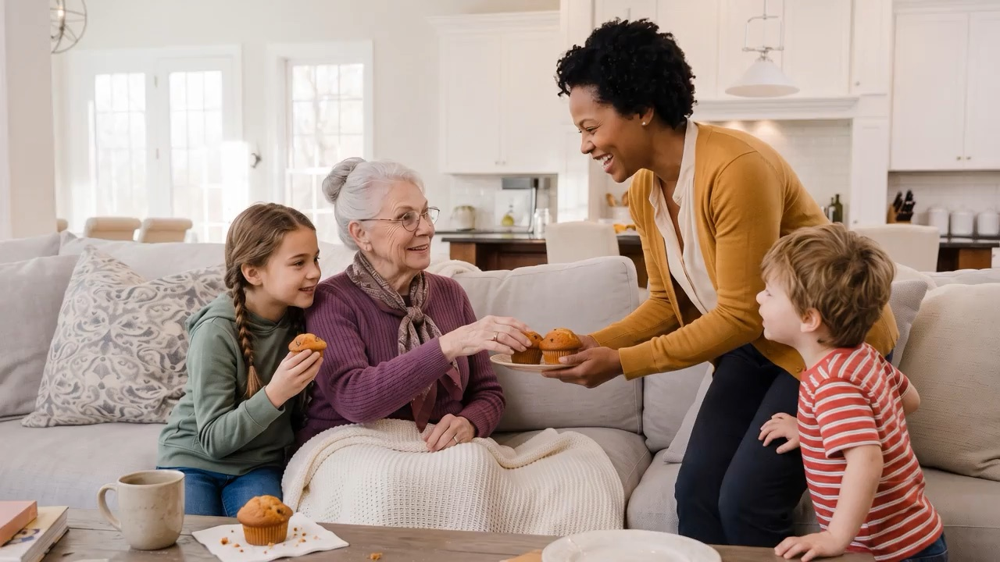
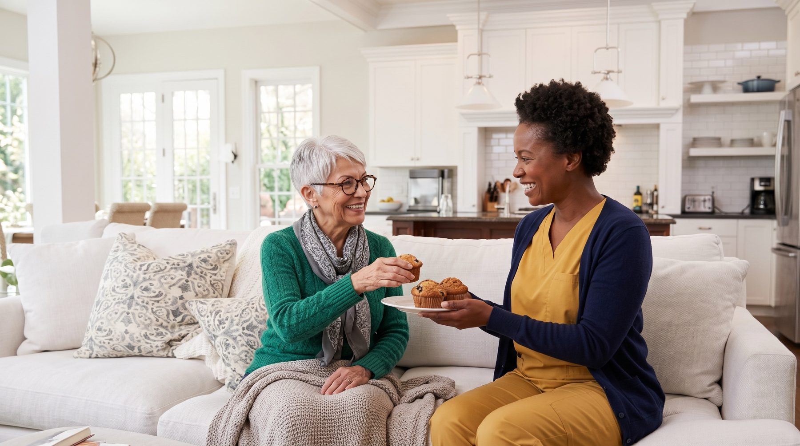

Skilled Nursing Services
Nursing assessments, medication management, wound care, and post-hospital support from licensed nurses.
Learn more

Compassion. Quality. Independence. Always.
Discovery Health LLC provides home health and community-based support services designed to promote health, independence, safety, and quality of life for individuals in their homes and communities.
Skilled nursing, non-skilled home care, and CCC Plus Waiver service facilitation.
From skilled nursing to help with everyday routines, Discovery Health brings the right level of support to you. Every plan is individualized, documented, and coordinated with your physicians and family.
Nursing assessments, medication management, wound care, and post-hospital support from licensed nurses.
Learn moreHands-on help with bathing, dressing, meals, mobility, light housekeeping, and companionship.
Learn moreService Facilitation for eligible CCC Plus consumer-directed participants, subject to current Virginia DMAS requirements and program availability.
Learn moreOne point of contact between you, your family, and your healthcare providers, with education that builds confidence.
Learn moreIndividualized care plans, ongoing monitoring, and careful documentation to support continuity of care.
Learn moreSafe hospital-to-home transitions, home safety checks, and support with mobility and stairs to help prevent falls.
Learn moreHere is how Discovery Health delivers care:
Call or send us a message. We listen to what is happening, answer your questions, and explain which services fit, including what may be covered by Medicaid or the CCC Plus Waiver.
A nurse completes an in-home assessment, and we create an individualized care plan together with you, your family, and your physicians.
Your care team arrives on schedule, monitors changes in your condition, keeps records current, and adjusts the plan as your needs change.
Home is where recovery is more comfortable, routines stay familiar, and family stays close. Our team brings clinical skill and everyday support to the place you know best.

Post-hospital and post-surgical care, wound care, and vital sign monitoring happen in your own space, so you can rest and heal without the noise and schedules of a facility.

Help with daily living should support your life, not take it over. We assist with what you need and encourage what you can still do, from meals and mobility to the small rituals that make a day yours.
We coordinate with your physicians, pharmacists, and support coordinator so instructions are clear, medications are managed, and nothing falls through the cracks between appointments.
Caregivers and family members receive education on preventing complications, fall prevention, and home safety, so everyone around you feels confident and supported.
Discovery Health LLC was built on a simple promise: compassion, quality, and independence, always. Our nurses and caregivers take time to know you, document carefully, and communicate with everyone involved in your care.
Your goals, routines, and preferences shape every plan.
Screened staff, careful documentation, and a close watch for change.
Connected to your physicians, your family, and local resources.
Education and prevention so today's care builds a healthier future.
The nurse who visits my mother explains every medication change in plain language and calls me afterwards. For the first time since Dad passed, I am not doing this alone.
After my hip surgery I wanted to be home, not in a facility. Discovery Health handled the wound care and watched my blood pressure, and I healed in my own bed.
They helped me understand my CCC Plus options and walked me through hiring my own attendant. The paperwork would have buried me without them.
My father is a proud man and does not like help. His caregiver found a way to assist without taking over, and now he looks forward to her visits.
As a support coordinator I need providers who document well and return calls. Discovery Health does both, every time.
Straight answers to the questions families ask us most. Have another? Send it to us and we will respond personally.
We provide home health and community-based support services in six areas: skilled nursing services, non-skilled home care services, Service Facilitation for Consumer-Directed Services under Virginia Medicaid's CCC Plus Waiver, care coordination and health education, quality, safety, and care management support, and transitional care and fall prevention. Care is individualized, documented, and coordinated with your physicians and family.
Skilled nursing is clinical care performed by a licensed nurse, such as nursing assessments, wound care and dressing changes, medication management, monitoring of vital signs, and post-hospital or post-surgical care. It is often ordered by a physician to treat or monitor a specific condition.
Non-skilled home care is hands-on help with everyday life: bathing, dressing, grooming, toileting, mobility and transfers, meal preparation, light housekeeping related to the person's care, and companionship. Many families use both, and we coordinate them under one plan.
Virginia Medicaid's Commonwealth Coordinated Care Plus (CCC Plus) Waiver allows eligible participants to direct their own personal care by hiring and managing their own attendants, with an Employer of Record (EOR) handling the employer responsibilities. A service facilitator supports that arrangement: completing the initial assessment, helping develop the service plan, explaining the roles of the EOR, attendant, and facilitator, assisting with recruiting and hiring attendants and with employer paperwork, completing required follow-up visits and reassessments, and keeping the required records.
Discovery Health LLC provides Services Facilitation for eligible CCC Plus consumer-directed participants, subject to current Virginia DMAS requirements and program availability.
The cost depends on the type of care, how often visits are needed, and how long each visit lasts. For eligible individuals, some services may be covered through Virginia Medicaid programs, including the CCC Plus Waiver, and other coverage such as long-term care insurance may apply. Call us and we will review the options for your situation with no obligation.
Call (267) 939-7727 or send us a message through the contact page. We will listen to what is happening, answer your questions, and explain which services fit. A nurse then completes an in-home assessment, and we build an individualized care plan together with you, your family, and your physicians. Care begins once the plan and any required authorizations are in place.
We aim to begin as soon as possible after the assessment. For private arrangements this can be quick. Services covered through Medicaid or the CCC Plus Waiver depend on authorization from DMAS or the managed care organization, and we will keep you informed at each step.
Practical guidance from our team on recovery, safety, comfort, and recognizing when something has changed.
After a hospital stay or surgery, many families assume a facility is the safest place to recover. For many people, home is the better choice. Here is why.
Read moreCameras, sensors, and alert devices can bring peace of mind, but every tool costs some privacy. A practical way to choose the right amount of monitoring.
Read moreNot everyone who hurts says so. Changes in mood, movement, routine, and expression can be the only clues that an older adult is in pain.
Read moreMedication and medical care matter, but so do the chair, the room temperature, the night's sleep, and the hundred small reaches of an ordinary day.
Read moreYour Health. Our Priority.
Because everyone deserves to be healthy, safe and supported, at home and in the community.